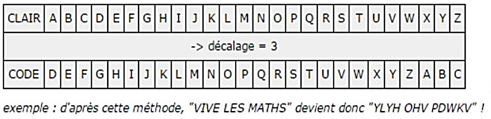
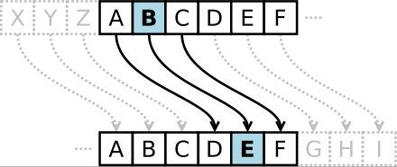
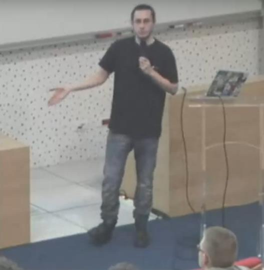

Sécurité d’un message
Faire apparaître le besoin de protéger un message, puis introduire le chiffrement et ses enjeux.
Protéger une information personnelle
Evolution de la règle du jeu : Demander à l’expéditeur d’envoyer un message personnel (quelque chose qui ne doit pas être connu par une tierce personne). Avant l’envoi, certains élèves sur le chemin de transmission joueront le rôle de cyber-voyous (Hacker, Black-Hat). Leur rôle sera de lire le message à haute voix s’il passe par eux.
Comment faire pour éviter que l’information ne soit dévoilée ?
il faut chiffrer le message
Le code César
Le mot cryptographie est un terme générique désignant l’ensemble des techniques permettant de chiffrer des messages, c’est-à-dire permettant de les rendre inintelligibles sans une action spécifique. Le verbe crypter est parfois utilisé.
Chiffrement CESAR : Il s’agit d’un des plus simples et des plus populaires algorithmes de chiffrement. Son principe s’appuie sur un décalage des lettres de l’alphabet.


A titre d’exemple, prendre votre nom et prénom et chiffrez-le à l’aide du code César en modifiant le décalage.
Seul le récepteur doit pouvoir déchiffrer
Est-il possible de faire des messages que seul le récepteur peut déchiffrer ?
Notions de chiffrement asymétriques
Sans le savoir, on utilise déjà le chiffrement au quotidien : dans la carte SIM de votre smartphone, dans votre carte bancaire, lorsque vous allez sur des sites internet de votre banque, lorsque vous achetez en ligne (le fameux cadenas vert sur les adresses http s ://) ou que vous regardez une vidéo sur un service de SVOD comme Canalplay ou Netflix.

De son côté, la CNIL considère que « la cybersécurité est un vecteur de confiance et d’innovation. Protéger les données personnelles dans l’univers numérique, à l’aide notamment du chiffrement, c’est aussi protéger un droit fondamental et, au-delà, l’exercice des libertés individuelles dans cet univers ». Julien Vaubourg - INRIA Nancy (2015)
Durée : 30 min
Pour rappel, l’article 8 de la Convention Européenne des Droits de l’Homme dispose :
« 1 Toute personne a droit au respect de sa vie privée et familiale, de son domicile et de sa correspondance. 2 Il ne peut y avoir ingérence d'une autorité publique dans l'exercice de ce droit que pour autant que cette ingérence est prévue par la loi et qu'elle constitue une mesure qui, dans une société démocratique, est nécessaire à la sécurité nationale, à la sûreté publique, au bien-être économique du pays, à la défense de l'ordre et à la prévention des infractions pénales, à la protection de la santé ou de la morale, ou à la protection des droits et libertés d'autrui. »
Chiffrement et rôle du régulateur
Pourquoi l’Etat a longtemps obligé les sociétés agréées fournissant des services de chiffrement sur le territoire français à procurer au service central de la sécurité des systèmes d’information les clés de chiffrement employées ?
Les réponses doivent vous aider à comprendre grâce à une discussion qu’il est important qu’il y ait un régulateur.
Les réponses doivent vous aider à comprendre grâce à une discussion qu’il est important qu’il y ait un régulateur. Sinon des personnes mal intentionnées pourraient en secret préparer des opérations illégales et dangereuses. Il faut préciser aussi que la grande majorité des conversations ne sont pas écoutées, c’est sous la direction d’un procureur et d’une enquête de police que se font les écoutes quand des indices permettent de suspecter des délits. La possibilité d’utiliser des mécanismes de chiffrement sans porte dérobée est encore en débat.